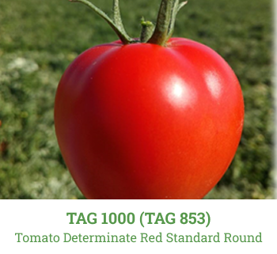
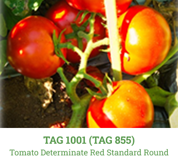
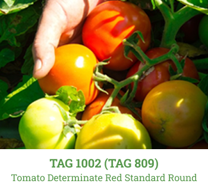
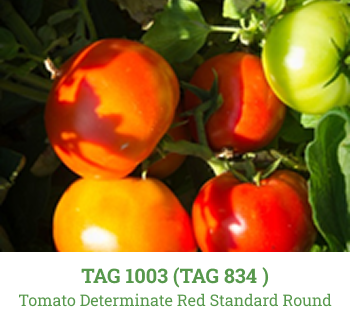
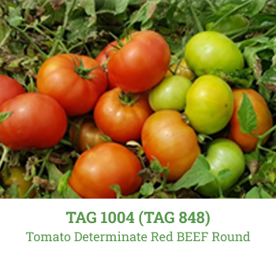
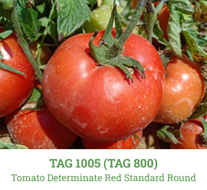
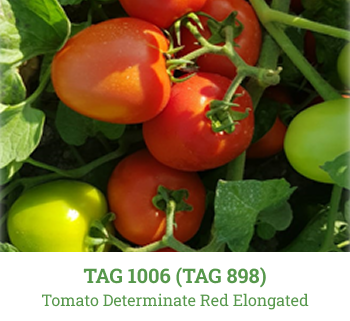
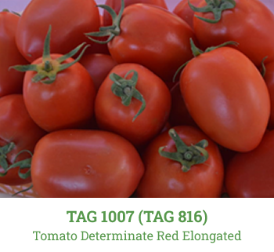

Agridera aims to be one of the world's leading companies in the breeding, production, and marketing of tomato seeds. We invest intensively in research and development to provide solutions to growers and consumers in numerous countries around the world.
Currently, emphasis is placed on combining Tomato Yellow Leaf Curl Virus (TYLCV) and Tomato Spotted Wilt Virus (TSWV) resistance with other soil borne disease resistance in open-field hybrids. Moreover, comprehensive efforts are being undertaken to develop varieties resistant to Verticillium Wilt (V), Cladosporium, and Fusarium.
In terms of horticultural value, breeding is for earliness, different fruit sizes, firmness, and fruit color, flavor, crack resistance, shelf life, and highly homogeneous fruit shape. Combinations of quality features and disease resistance are sought in a variety of types, namely round and elongated shapes.
This breeding is aimed for the Spanish and Turkish markets. For single and cluster truss plums, round fruits shape and resistances of TYLCV, TSWV, Nematodes and Fol. Other countries include Morocco and Russia.
This breeding is for Brazilian, Moroccan, and Turkish markets. The main focus is on large round shape fruits and resistances to TYLCV, TSWV, Nematodes and Fol.
This breeding is for Mediterranean markets. We breed round and elongated shapes, standard sized fruit, and bush type hybrids with resistances and strong field performance.

Tomato Determinate Red Standard Round

Tomato Determinate Red Standard Round

Tomato Determinate Red Standard Round

Tomato Determinate Red Standard Round

Tomato Determinate Red BEEF Round

Tomato Determinate Red Standard Round

Tomato Determinate Red Elongated

Tomato Determinate Red Elongated